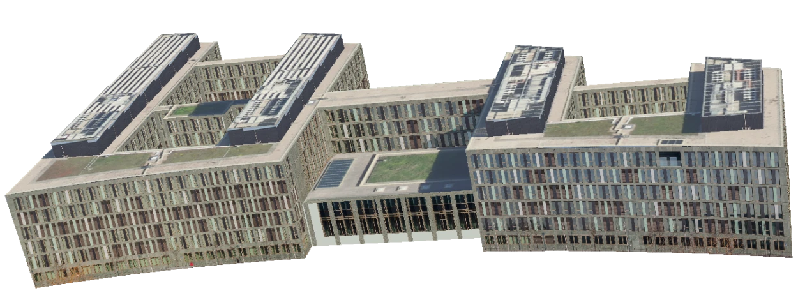
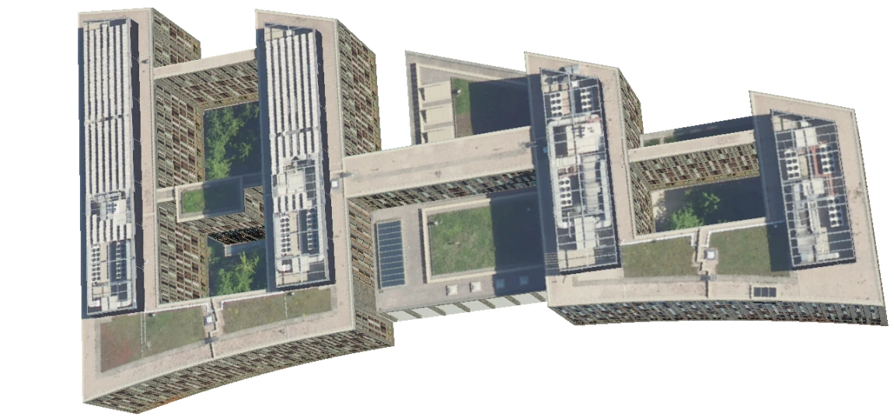
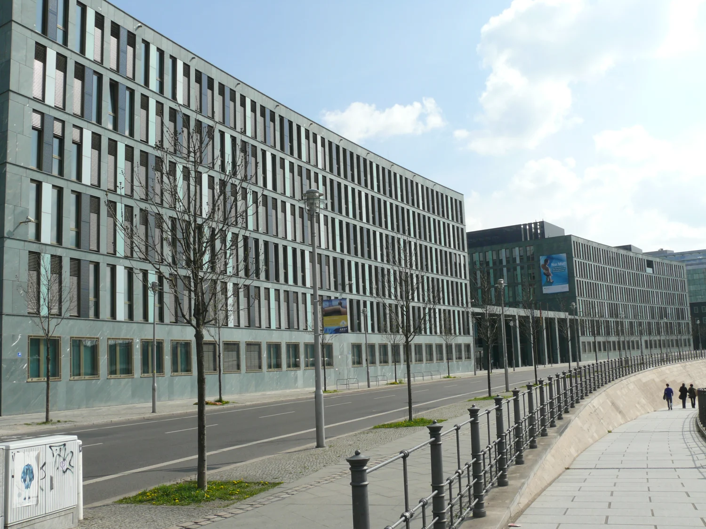
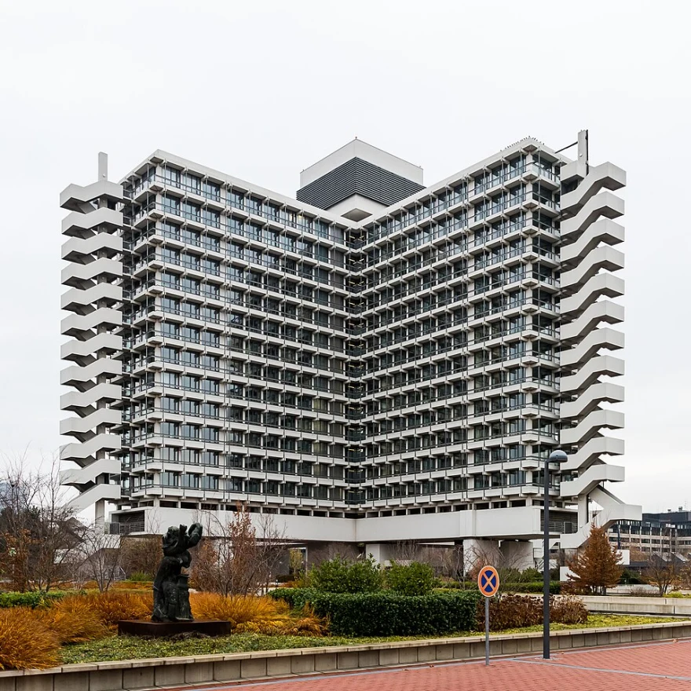

My Job,
my Company
Federal Ministry of Research,
Technology and Space
IT Specialist for System Integration

The ministry
- Berlin and Bonn
- Responsibilities and leadership
- High-Tech Agenda
-
Federal Ministry for Atomic Affairs
Research into peaceful uses of nuclear energy
-
Research, Technology and Space
New name and responsibility for space policy
Berlin & Bonn
- BerlinKapelle-Ufer 1
- BonnHeinemannstraße 2





What the ministry does
- Federal research and technology policy
- Public funding for research projects
- Space programmes and cooperation
Dorothee Bär
- Federal Minister since May 2025
- Member of the Bundestag since 2002
- Former Federal Government Commissioner for Digitalisation

High-Tech Agenda
- Germany’s strategy for six key technologies
- Support for research and putting results into practice
Three priority technologies
- Artificial intelligence
- Quantum technologies
- Microelectronics
My work in IT
- Building PCs and setting up desks
- Virtual machines and networking
- Short technical presentations
PCs & workstations
- Assembling PCs with the IT team
- Joining colleagues on visits to staff offices
- Helping set up PCs, screens and peripherals
My virtual machine lab
- Setting up two virtual machines
- Connecting them to the same virtual switch
- Giving each VM an IP address and testing the connection
VM A
VM B
Virtual switch
Explaining networking
- Preparing short talks on technical topics
- Showing how devices connect
- Tracing how data gets from one device to another
Device A
Switch
Device B
My apprenticeship
Questions?
Pros
- Good pay and extra courses with certificates
- Supplementary pension for eligible staff
- Nice location, building and offices
Cons
- Extra care with official information
- Many regulations and procedures to follow
- Frequent mandatory meetings